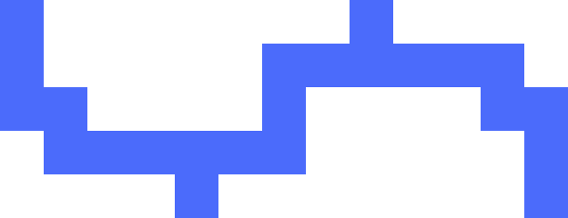
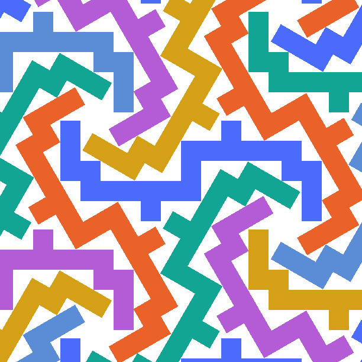
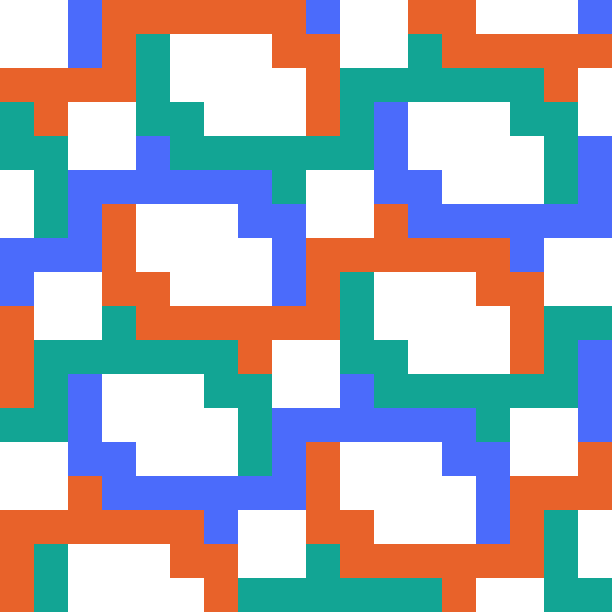
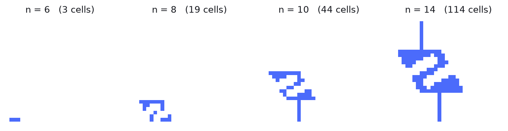
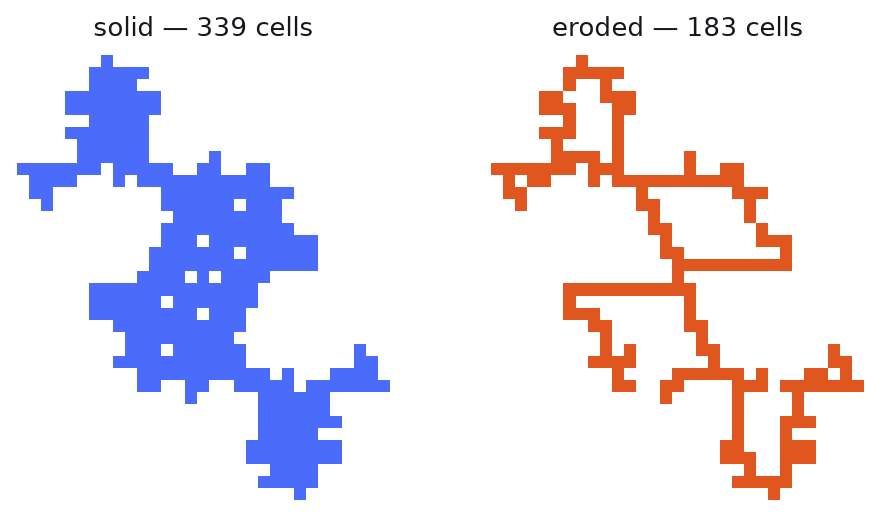

the piece
23 cells
Discrete geometry · packing · gallery →
A polyomino is built from unit squares on a grid, so the grid feels like its natural home. It isn't always. Here is a 23-cell polyomino that packs the plane more densely when you rotate copies of it by 120° — an angle the grid cannot express — than in any grid-aligned arrangement anyone has found for it. Below: how to search for such a thing, and how to keep yourself honest about it.
Deleting one cell gives a 22-cell version that still works, but with almost no margin left. This 23-cell one is shown throughout because it is the better-understood example — and, within one natural family of candidates, provably the smallest that family contains. Whether anything smaller than 22 exists is open.

the piece
23 cells

tilted — 3 orientations
ρ = 0.6805

grid-aligned — best known
ρ = 0.6216
The one identity that makes the whole search tractable.
A packing that places one copy per D cells of plane has density
K/D, where K is the polyomino's cell count. But K is the
same number in both packings, so it divides out of the comparison entirely:
tilted wins ⇔ Daligned > Dtilted
Only area per copy matters. The cell count doesn't appear.
Two things follow, and they shape everything downstream. First, the tilted side is free:
place the copies on a rhombille lattice at scale n and
Dtilted = n²·√3/2 exactly, whatever the piece looks like.
Second — and this is what makes small polyominoes reachable at all — you can delete
cells without changing the verdict, so cell count becomes an almost independent axis to
minimise rather than a cost to pay.
And why that's the whole game.
Start with what's impossible. A polyomino's boundary is made of unit segments running north–south and east–west. Rotate a copy by anything that isn't a multiple of 90° and its boundary segments point in two new directions. For two regions to share boundary along a segment of positive length their boundaries must be parallel there — so a tilted copy and an untilted one can only ever touch at isolated points.
Propagate that through a tiling and every tile must be grid-aligned relative to its neighbours, hence to all of them. So:
No polyomino tiles the plane with a tilted copy. Every tilted packing wastes area.
Which sounds fatal, and isn't. We don't need the tilted packing to be perfect — only to waste less than the aligned one. The design problem becomes: build a shape whose grid-aligned packings are catastrophically bad, and whose tilted waste is merely small.
Borrowing frustration from the rhombille tiling.
The rhombille tiling — the "tumbling blocks" pattern — is made of 60–120° rhombi in three orientations 120° apart. Its symmetries form the wallpaper group p3: all translations of a triangular lattice, plus rotation by 120°. (Everything below works just as well in p6, which adds 60° rotation and so packs twice as many copies into the same repeating unit; the group is a parameter in the code.) It has a property worth exploiting: every edge joins a 6-valent vertex to a 3-valent one, without exception. So orient every edge from its 6-valent end to its 3-valent end, and stamp the same asymmetric profile along all of them, tab on the left.
Two tiles sharing an edge then generate the identical curve from opposite sides, so they still fit exactly. But the tile now has tabs on one pair of edges and dents on the other, which means sliding it without rotating jams tab into tab. It fits in the rhombille arrangement and essentially nowhere else.
A constraint that had been read too conservatively — worth 6× in cell count.
Deeper keys frustrate the aligned packings harder, and that matters enormously: the
smallest usable scale n goes like 1/δ in the aligned density
deficit δ, and a hollowed piece costs about its perimeter, so K ∝ n.
Deeper key, smaller piece.
So how deep can a dent be before it cuts through the tile? Flatten the rhombus into the
edge's own frame — t along the edge, s inward — and it
becomes a sheared parallelogram. A dent is a rectangle sitting on the bottom edge. It fits
exactly when its inner corner stays inside:
t0 = 0.25, which caps depth at 0.43 — and concluded depth was
capped. Slide the tab further along the edge and depth reaches ~0.8. That single
change took the smallest known piece from 339 cells to under 60.Where all the difficulty actually lives.
The continuous tile is only a scaffold: the real object is its rasterisation onto the
grid at some scale n. Rasterising loses about one cell along every unit of
boundary, so the loss is O(1/n) — harmless when n is large, and the entire
problem when it isn't. Push n down and the keys degrade into noise, then into
nothing:

n = 6 the shape has collapsed to a
3-cell bar with no keys at all; at n = 8 it shatters into disconnected
fragments; by n = 14 the tabs and dents are unmistakable. The search is a fight
to get n as low as possible while the keys still bite.The step that converts "it works" into "it is small".
Because cell count cancels, interior cells can be deleted outright. The question is how to be sure a deletion changed nothing. The usual argument — "the cavity is enclosed, so no copy can reach it" — needs care about whether a copy fits inside the cavity, and says nothing about the outer boundary.
There's a cleaner invariant. For each ordered pair of the 8 grid orientations, tabulate which relative offsets make two copies collide: 64 tables. If deleting a cell leaves all 64 bit-identical, then for any set of grid-aligned placements whatsoever — lattice, non-lattice, periodic, aperiodic — the smaller piece collides exactly when the original does. No packing search is needed to justify it, and no future oracle can overturn it.

The hard half: an upper bound over every grid-aligned packing.
Claiming a tilted packing is good is easy — exhibit it and measure it. Claiming that no grid-aligned packing beats it is a statement about an infinite space of arrangements, and every failure in this project's history was a check that hadn't looked hard enough.
Pick two vectors and put a copy of the piece at every whole-number combination of them. The copies then sit at the corners of a tiling by parallelograms, one copy per parallelogram — so the area per copy is just the area of that parallelogram. For vectors with integer coordinates that area is a whole number; it is what the code calls a determinant. Write det1 for the smallest area per copy any such arrangement achieves: the densest packing that repeats with one copy per repeating unit. Finding it is a finite search, because a parallelogram of small area forces one of its sides to be short, and there are only so many short vectors.
Real packings needn't be that regular. A packing can repeat with some period while
putting several copies — differently rotated, differently offset —
inside each repeating unit. Call the area of that repeating unit A and the number of
copies inside it m, so the area per copy is A/m. A lattice packing is
just the case m = 1.
Now the useful reframing. Glue the repeating unit's opposite edges together and the
plane becomes a doughnut — a torus of area A — and the packing
becomes "fit m copies in this torus without overlapping". That is a finite
yes-or-no question, and a SAT solver answers it exactly: no heuristics, no sampling. Better
still, every possible repeating unit has exactly one canonical description — its
Hermite normal form, a standard way of writing a lattice so that congruent
descriptions collapse to a single representative — so running through them covers
every size, every shear and every aspect ratio, each exactly once, with no duplicates and
nothing missed.
Concretely, the solver is handed one yes/no variable per candidate placement — a choice of orientation together with a position in the torus — and one rule per torus cell saying that at most one chosen placement may cover it. Expressing the non-overlap rule cell by cell rather than copy by copy is what keeps it small: for a 118-cell torus that is 236 variables and 118 rules, against roughly 28,000 if you wrote down every pair of conflicting placements. You could equally scan over positions by brute force — at three copies that is only about a million combinations — but the solver prunes rather than enumerates, stays practical at four and five copies where the scan is astronomical, and hands back a proof of impossibility, which is exactly what lets the next level's floor be raised.
The catch is that there are infinitely many repeating units. Two small observations cut them down to a finite list.
Put a single copy in the torus. Because the torus wraps around, the copy has to avoid
its own wrapped images too — and it hits one exactly when the vector between two of
its own cells happens to be one of the torus's periods. Avoiding that is precisely the
condition for those periods to form a valid lattice packing. So a torus that holds even one
copy already has A ≥ det1, and nothing smaller need be looked
at.
Obvious on its own, but it chains. Once we have shown that no torus below some area
holds m−1 copies, no torus below that area holds m either
— that is the floor. And the ceiling: m copies only beat the tilted
packing if A/m < Dtilted, that is
A < m·Dtilted. Floor and ceiling sandwich each level into
a window about one Dtilted wide — a few hundred areas. Clear
a window and the next level's floor rises to meet it, so the windows stay finite as
m climbs.
det1 no torus
holds even one copy; above m·Dtilted a packing with
m copies can't beat the tilted density. That leaves two finite windows, and
all 69,842 tori in them are infeasible — every shear, every aspect ratio,
non-lattice arrangements included.Alongside all this, det1 is re-derived by a second, deliberately
stupid program: walk through every repeating unit in its canonical form and test for
collisions by directly intersecting the two sets of cells. No clever transforms, no
shortcuts, and no shared code with the fast checker. It reproduces every value exactly.
A cross-check like this is cheap, and it is the single thing most likely to catch a subtle
bug in the machinery you have already started trusting.
Dropping the tile shape from the search entirely.
Everything so far designs a continuous tile and then rasterises it. But notice what the tilted side actually requires: copies sit at prescribed places, so the only constraint on a candidate piece is that no cell of it collides with any cell of any other copy. Build a graph whose nodes are grid cells and whose edges join exactly the pairs that would collide. Then a valid tilted piece is precisely a set of cells with no edge inside it — every pair mutually compatible. In graph terms that is an independent set, and asking for the smallest one subject to extra conditions is exactly what constraint solvers are built for. Note what the graph depends on: the arrangement's scale, its rotation against the grid, its sub-cell offset and which symmetry group it uses — and no tile shape anywhere.
So the search becomes a clean optimisation over all valid pieces at once:
minimise the number of chosen cells
subject to — no two chosen cells are joined by a collision edge (so the tilted packing is valid)
— and no grid-aligned lattice packing
reaches Dtilted
The second constraint goes in completely rather than by sampling, and the
trick is to name the right quantity. For each possible offset t, introduce a
yes/no variable meaning "the piece overlaps its own copy shifted by t". Now
take any candidate lattice packing: it works precisely when the piece fails to
overlap itself at every one of that lattice's shifts. So to rule the packing out we need
the opposite — at least one of those shifts must be an overlap — which is a
single either/or clause over a handful of variables. One clause per lattice we want to
forbid.
And we don't need a clause for every lattice. A sparser lattice always contains a denser
one inside it (take every second point), so forbidding the denser one forbids the sparser
automatically; only lattices in a narrow band of areas need clauses at all. At
n = 10 that is 4,585 clauses over 530 offsets — complete coverage of
every single-copy lattice packing, compiled into the model rather than tested after the
fact.
Packings with several copies per period can't be written down exhaustively like that — but any individual one is trivial to forbid, and that turns out to be enough. The loop is counterexample-guided refinement: solve the model as it stands, hand the resulting piece to the packing checker, and if the checker finds an arrangement that beats the target, add one clause saying the piece must collide with that arrangement, then solve again. Repeat until the checker comes back empty. Every clause added corresponds to a real packing, so a valid piece is never wrongly excluded, and on termination the piece genuinely passes.
Its weakness is instructive. Each clause kills roughly one arrangement, so the loop only
converges once few remain to kill — and a piece with too few cells is beaten by
astronomically many of them. Asking for 25 cells at n = 10, the loop ground on
indefinitely; fixing the count at 38 and searching there converges, because at 38 cells
there is far less left to forbid.
A search that stops improving tells you nothing: maybe there is nothing better, maybe you just ran out of patience. Distinguishing those two is worth more than another day of searching, and there is a cheap way to do it.
Throw away the hard half of the problem. Keep the constraints that say the tilted packing is valid and that no single-copy lattice beats the target — drop every multi-copy clause. That is a relaxation: every genuine piece still satisfies it, but many impostors do too. Relaxations are useless for producing answers and excellent for ruling them out, because the implication only runs one way:
relaxation infeasible ⇒ no piece exists at all
relaxation optimum is K ⇒ no piece has fewer than K cells
Both directions fail if you
read them backwards. A feasible relaxation means only "not ruled out" — at
n = 5.51 it cheerfully returns a 14-cell piece whose real ratio is 0.67.
Because it is cheap, it can be swept. Over scales from 5.00 to 6.28 and every sub-cell
offset admitting the 180° symmetry, the relaxation is infeasible everywhere below
n ≈ 6.245 — no symmetric piece exists at any smaller scale,
full stop — and from there up it solves to a proven optimum of exactly 23. The
23-cell piece above attains that bound. So it is not merely the best found: within that
family it is optimal, and no amount of further searching there can help.
Which is exactly the value of a negative result. It says where not to look, and what has to change to make progress — here, giving up the 180° symmetry that made the search fast in the first place.
And that is not hypothetical: the 22-cell piece in the table below is what happens when you do. It is this 23-cell piece with a single cell deleted — and since that cell had a partner across the centre, removing it destroys the symmetry. The result is no longer a member of the family the proof covers, so there is no contradiction in its being smaller. A result of this shape is only ever as strong as the family it quantifies over, and the cheapest way to beat one is to step outside it.
Everything here is an upper bound: a 22-cell polyomino exists. Nobody has shown 21 is impossible — no lower bound on the minimum is known at all.
There is a second surprise hiding in the same question. Ask instead for a piece with more cells — 24, or 25, or 26 — and every answer is also infeasible. Cells cannot simply be added: a piece has to avoid every rotated copy of itself, and 23 is where that runs out. So 23 is the maximum as well as the minimum, and at this scale and offset the set of workable shapes is not a vast landscape to be searched but exactly two polyominoes — genuinely distinct ones, not reflections of each other, differing only by shifting a cell at each end. The arrangement, it turns out, very nearly dictates the piece.
One caveat worth keeping in view: this is a statement about 180°-symmetric pieces at one arrangement angle, sampled on a grid of scales. A feasible window narrower than the sampling step would slip between the samples.
Smaller is better; the ratio must stay above 1.
| scale n | cells | Daligned/Dtilted | ρ tilted | ρ aligned | verified to |
|---|---|---|---|---|---|
| 6.24402 | 22 | 1.007 | 0.652 | 0.647 | 6 copies |
| 6.24403 | 23 | 1.096 | 0.681 | 0.622 | 6 copies |
| 6.78869 | 27 | 1.052 | 0.676 | 0.643 | 6 copies |
| 7.75278 | 30 | 1.095 | 0.576 | 0.526 | 4 copies |
| 10 | 47 | 1.016 | 0.543 | 0.534 | 2 copies |
| 10 | 50 | 1.028 | 0.577 | 0.562 | 3 copies |
| 11 | 55 | 1.107 | 0.525 | 0.474 | 2 copies |
| 11 | 58 | 1.126 | 0.553 | 0.492 | 3 copies |
| 12 | 68 | 1.119 | 0.545 | 0.487 | 2 copies |
| 14 | 87 | 1.208 | 0.513 | 0.424 | 2 copies |
| 22 (prior work) | 183 | 1.202 | 0.437 | 0.363 | 2 copies |
The starting point was 339 cells. "Checked to m copies" means every grid-aligned packing repeating with at most m copies per period has been enumerated and shown infeasible — equivalently every m-copy lattice packing, over every period shape, shear and aspect ratio. What remains open is packings with more copies per period, and aperiodic ones.
The two smallest entries were not designed at all: they came out of the solver searching
every valid piece at a given scale, and neither is a rasterisation of anything. Note also
that their scales are not whole numbers. Since D_aligned depends only on the
piece, the right scale is the smallest one at which the piece still packs — and at
integer scale the 27-cell piece fails, with a 4-copy packing beating it by half a
percent. Shrinking the arrangement by 1.5% is what makes it work.